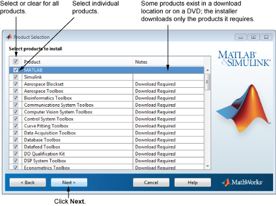

製品リストから、インストールまたはダウンロードする製品を指定します。このリストには、選択したライセンス、あるいは指定したアクティベーション キーまたはファイル インストール キーに関連付けられているすべての製品が表示されます。インストールまたはダウンロードしない製品がある場合は、製品名の横にあるチェック ボックスをオフにします。
メモ: 選択した製品がお使いのコンピューターの既定のダウンロード フォルダーまたは DVD に存在している場合、インストーラーは MathWorks® Web サイトからファイルをダウンロードする代わりに、ローカル ファイルを使用してインストールを実行します。製品を再度ダウンロードする場合は、[フォルダーの選択] ダイアログ ボックスに戻り、別のインストール フォルダーを選択します。 |

必要な製品を選択した後、[次へ] をクリックして続行します。